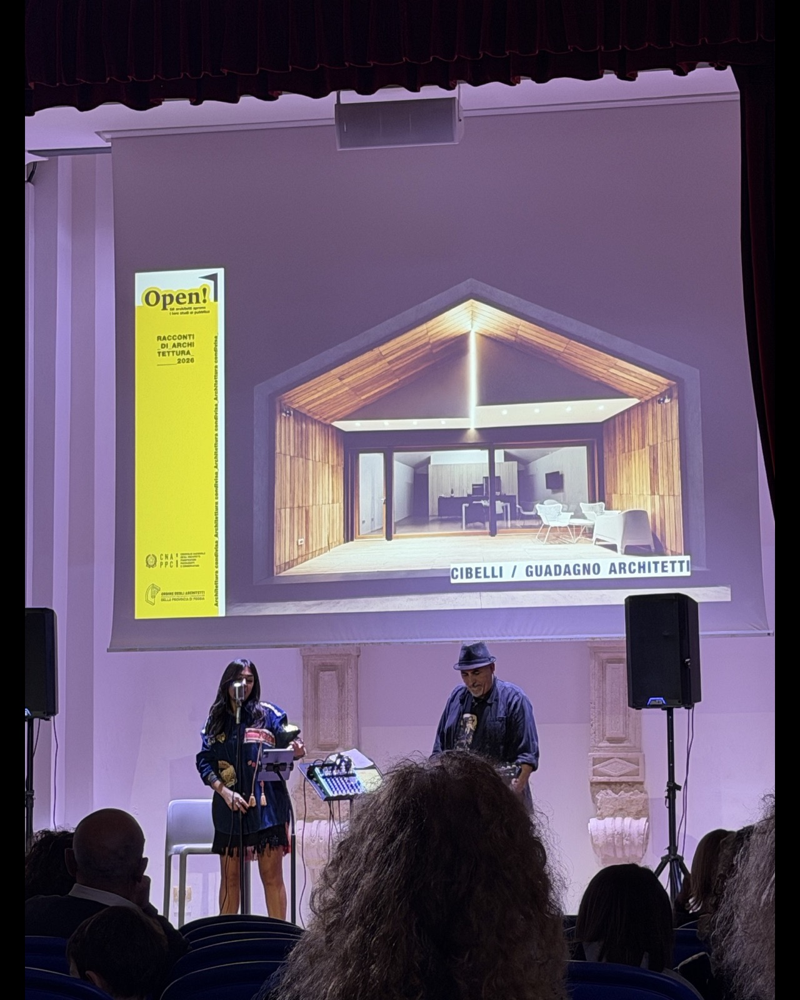
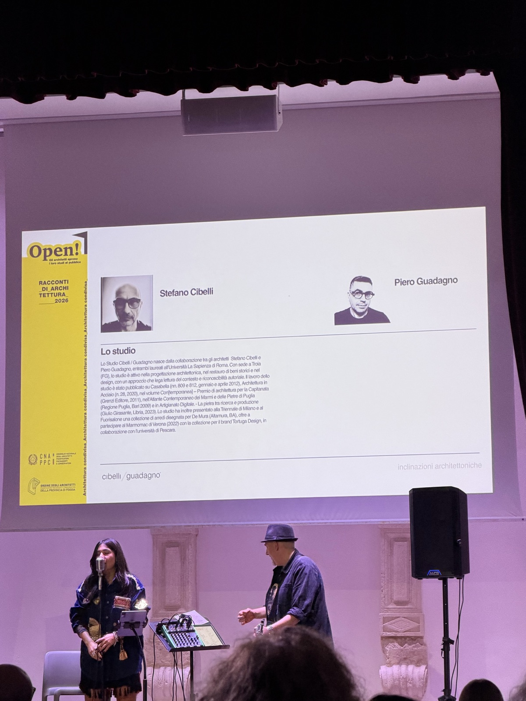
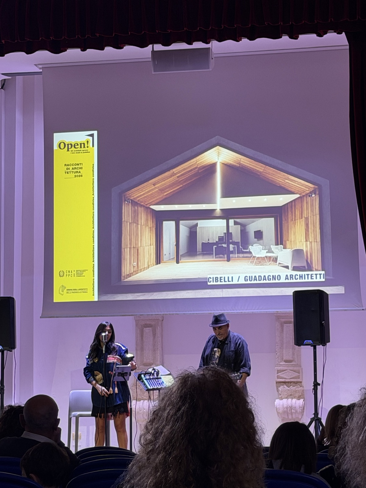
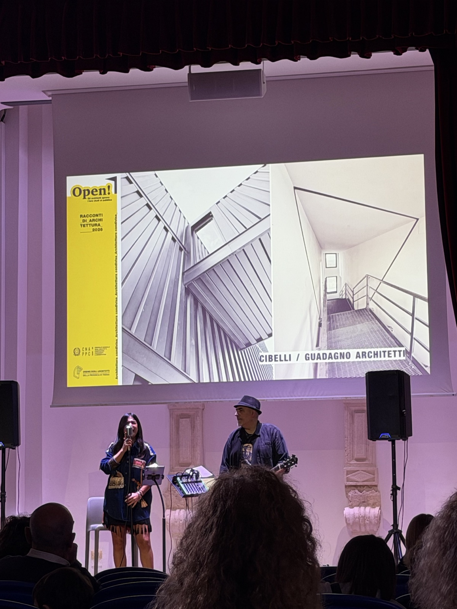
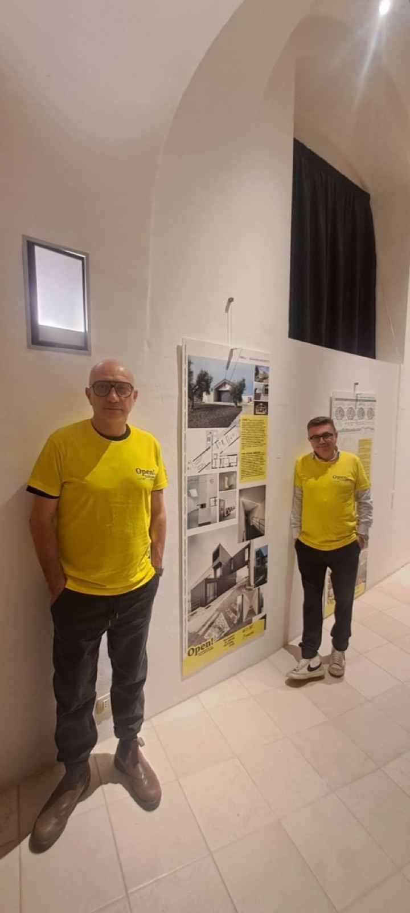
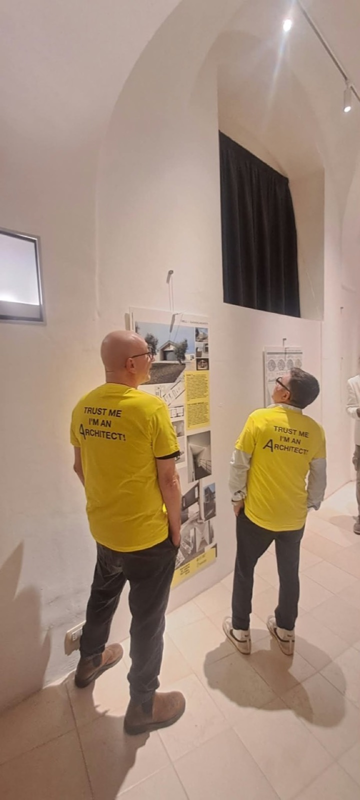

Open! 2026 / l’architettura incontra la città
Foggia, 10 ottobre. All’Auditorium Santa Chiara è in corso “Racconti di Architettura 2026”: lo Studio Cibelli/Guadagno partecipa alla collettiva tra progetti, musica e incontri con il pubblico.

Questa sera l’architettura si racconta fuori dagli studi. Il Collettivo_ARCHITETTI_Foggia, riunito dall’Ordine degli Architetti della Provincia di Foggia nell’ambito di Open! Studi Aperti, porta a Santa Chiara lavori e idee dei professionisti del territorio.
Al centro dell’iniziativa c’è il confronto con la città: rendere accessibili i progetti, spiegare le scelte che li accompagnano e aprire una conversazione sui luoghi che abitiamo. La mostra e le proiezioni delle tavole si intrecciano con un programma di laboratori per ragazzi, letture teatrali, musica dal vivo e microtalk dedicati ai lavori esposti.
Anche il nostro studio contribuisce a questo racconto. La tavola di Cibelli/Guadagno e le immagini proiettate presentano una selezione del nostro lavoro, attraverso vedute, disegni e dettagli. Il volume a falde, gli spazi rivestiti in legno, le scale e le superfici metalliche mostrano alcune delle relazioni tra forma, materia e luce che attraversano la nostra ricerca progettuale.
Rivedere questi lavori accanto a quelli dei colleghi, mentre la sala si anima di voci e musica, offre un’occasione per condividerli e discuterli. Le fotografie della serata raccontano proprio questo: il progetto sullo schermo, le persone davanti alle tavole, l’architettura come punto d’incontro.




